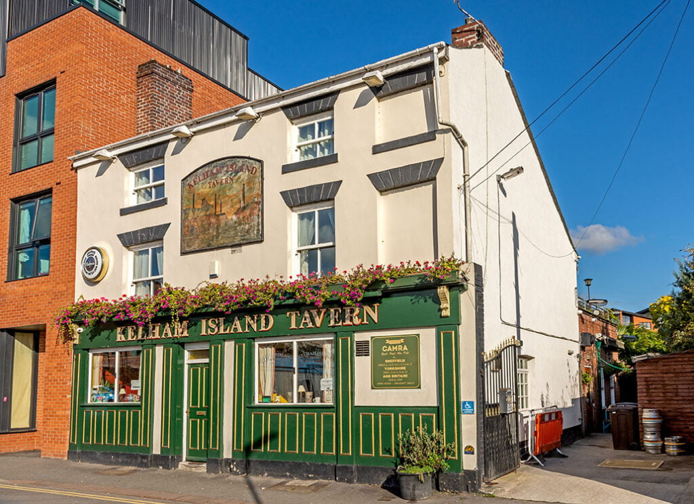
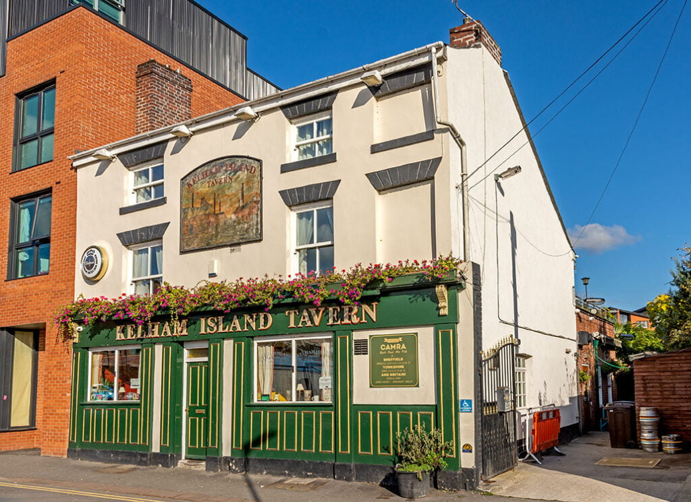

🍺Kelham Island Tavern🍺
Pub with carved wooden bar, tiled floors, leafy beer garden and renowned range of real ales.
Address: 62 Russell St, Sheffield S3 8RW
Pub with carved wooden bar, tiled floors, leafy beer garden and renowned range of real ales.
Address: 62 Russell St, Sheffield S3 8RW